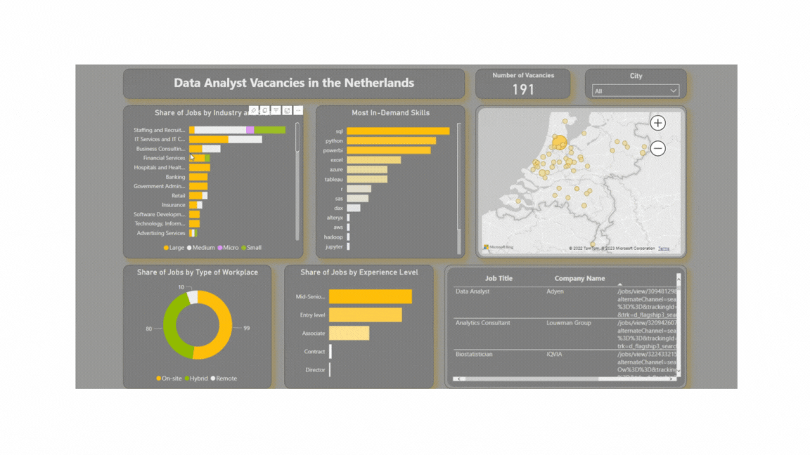
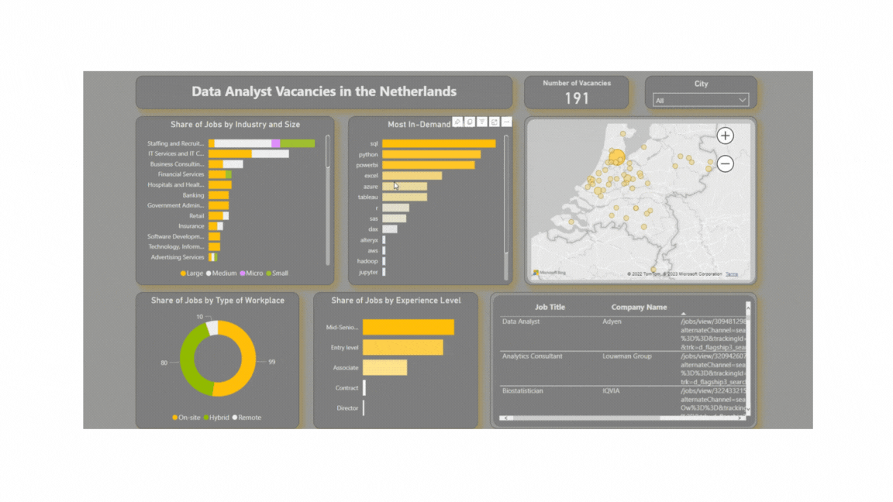
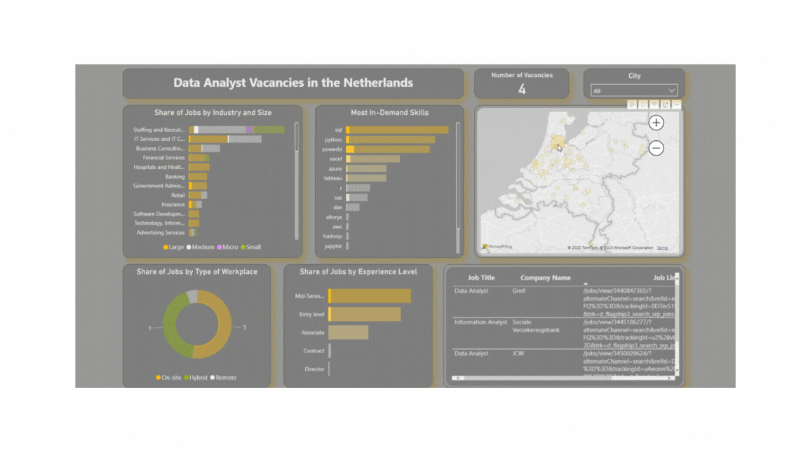
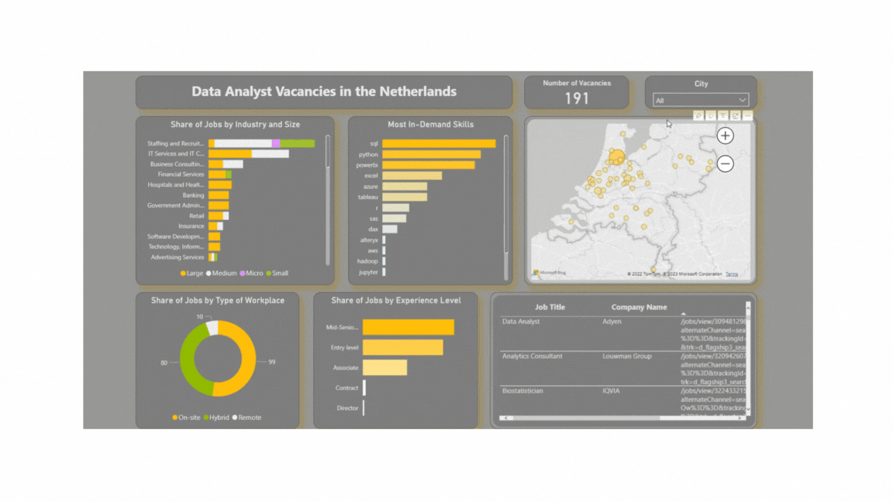

Scraping and Analyzing Junior Data Analyst Job Listings in the Netherlands
Web scraping has become a popular tool for extracting data from websites for various purposes. In this project, LinkedIn was scraper to gather information about data analyst jobs in the Netherlands. The extracted data was then used to gain insights into the most commonly searched for skills, the most common industries, types of work, etc... Understanding the most sought-after skills and job types can help job seekers tailor their applications and make informed career decisions. The aim of this project is to provide such insights based on data gathered through web scraping, mostly for my personal use and need.
Problem Definition
The country of Netherlands, with its thriving tech scene and innovative business cultures, has caught my attention as a potential destination to pursue my career in data analytics. The country's unique blend of forward-thinking policies, entrepreneurial spirit, and diverse cultural landscape makes it an exciting place to work and live. For this reason I decided to find out where most of the job vacancies are located, what type of workplace and type of work dominate in the country, which indutries I should look for and what skills I should sharpen as a Junior Data Analyst. Some of the questions I asked for this project are:
Tools/Libraries used
For this project I decided to go for the more traditional data analyst tools and relying more on Microsoft Excel and Power BI to do the cleaning and analysis instead of Python. I mostly used:
Data Source and Data Description
This is a standalone dataset I collected by scraping LinkedIn jobs with the keyword "Junior Data Analyst" in Netherlands. Scraping was done with Selenium as the website has dinamic elements which required flexibility. For this reason I could't do it with Scrapy, but I also wasnted more practice with Selenium as it is a great tools for dynamic web scraping for small to medium datasets. Although Selenium was used to grab the full html of the pages, the scraping of the individual elements was done with BeautifulSoup since the elements itself were pretty simple and it saved me a lot of time. BeautifulSoup is ideal for simple scraping jobs. Here you can find the full code for both the HTML downloader and the scraper.
The dataset itself is not very large and contains 200 jobs. It is the most I was able to scrape with multiple tries before getting blocked on LinkedIn. They don't like having their page scraper apparently. Have I decided to do the scraping immediately with Selenium I would propably have gotten blocked earlier. The dataset consists of the following columns:
Data cleaning and transformation
Scraped data is always full of errors, null values and wierd symbols that the program can't recognize especially since some of the vacancies are in a foreign language. Most of the cleaning was done in Excel with Power Query. Majority of the cleaning included removing excess words that added no extra meaning, removing extra spaces, standardizing names and titles who had the same or similiar meaning, renaming dutch titles into english, and overall normalizing the data.
The biggest challenge was to collect information from the job description which contained a lot of the required skills needed for the job. By extracting keywords from the description it would be possible to get insight which tools were the most searched for this position. For this first a list of most common and popular tools were named.
tools = ['sql', 'excel', 'python', 'r', 'tableau', 'powerbi', 'sas', 'jupyter', 'looker', 'spark', 'aws', 'azure', 'hadoop', 'alteryx', 'rapidminer', 'spss', 'dax', 'matlab', 'power bi']After that, we create a pattern which is made of those words in the list, basically creating a long string. Then we use the "str" function to search the description for the pattern. A new column is created which contains those skills/tools for each unique row. The last step is to iterate through the skill lists and remove the duplicates because sometimes the same skill is mentioned multiple times.
pattern = r"(?:^|\s+)(" + "|".join(str(v) for v in tools) + r")(?:\s+|$)"df['Job_skills'] = df['Job Description'].str.findall(pattern)def func(x):
return list(dict.fromkeys(x))
df['Job_skills'] = df['Job_skills'].apply(lambda x:func(x))
Interractive dashboard
Power BI is a great tool for creating dynamic and simple dashboards. The next few pictures show a few interactive elements through which the user is able to filter data and gain deeper insight about the various job opportunities in the Netherlands. Each element is able to filter another element which provides more information about another table or graph. Overall I decided to show the company industries, the most in-demand skills, the share of workplace type (remote, hybrid or on-site), a map of netherlands showing the frequency of vacanies by cities, jobs by experience level and a table showing the job vacancy with the job link for easy access. Below are a few examples of report in action with its interactive elements.
   Conclusion and key takeaways
Today LinkedIn is the biggest platform for job postings and job hunting and thus contains a great number of data on different job vacancies. Scraping that data is a bit tricky though since LinkedIn really does not like having its data scraped. Non the less I was able to get the information I wanted even on a fairly smaller dataset. As somebody looking for a job in the Netherlands as a Junior Data Analyst I was able to extract some key takeaways from the project:
Weaknesses and what can be improved